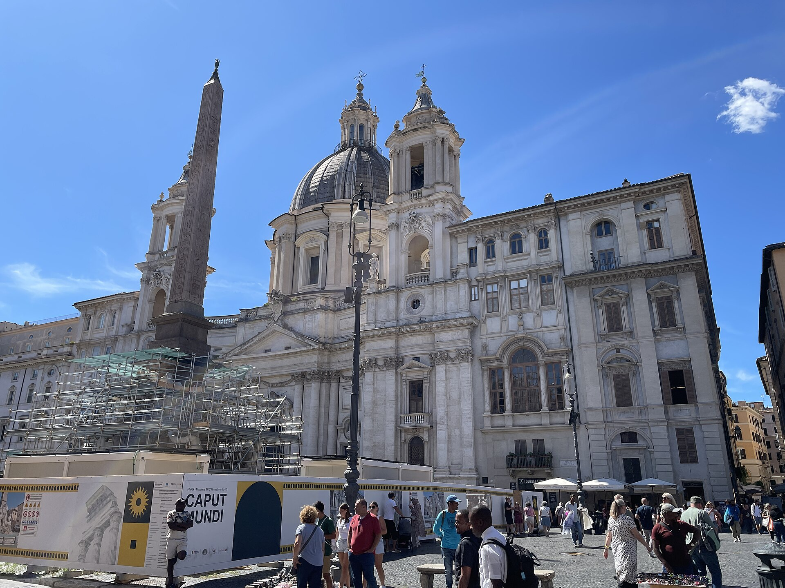
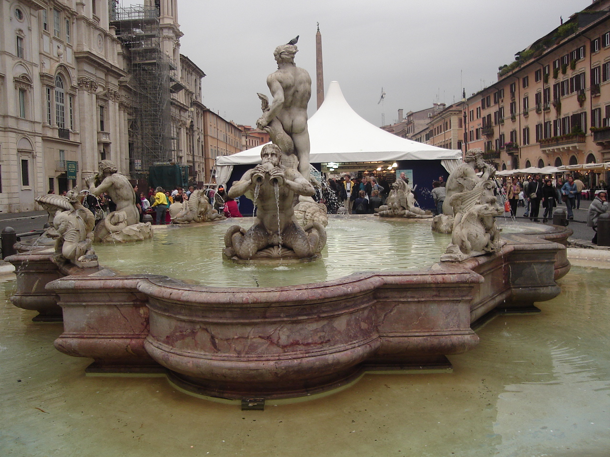
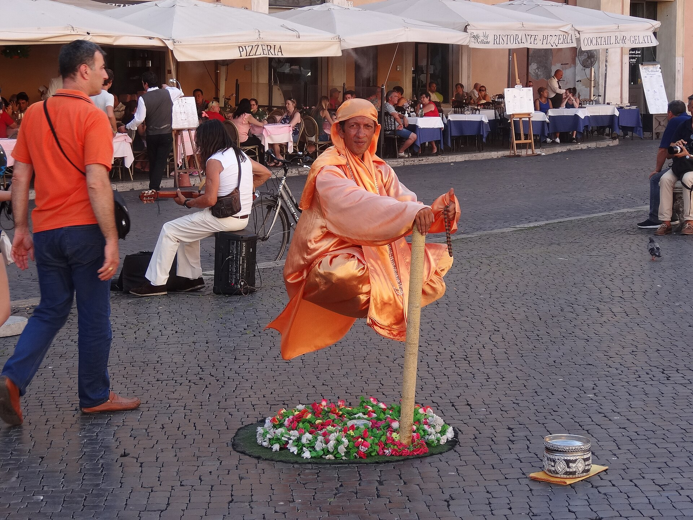

罗马最热闹的巴洛克广场，椭圆形状暴露了它的前世——公元 86 年图密善竞技场的跑道。今天三座喷泉、一座博罗米尼教堂与满场街头画家，把巴洛克罗马的戏剧性压缩进一个画面。
看点路线
Il Percorso
- 1广场中央：贝尼尼《四河喷泉》
- 2正对喷泉：博罗米尼的圣依尼斯教堂立面
- 3南北两端：摩尔人喷泉与海神喷泉
- 4傍晚最有人气：街头画家、乐手、餐厅外摆全部上线
广场看点
La Piazza · 4 件巴洛克装置

《四河喷泉》
四座巨石拟人像代表当时已知世界的四大河：尼罗河（蒙着头，源头未知）、恒河（持桨，可通航）、多瑙河（伸手迎向教皇徽章，最靠近罗马的河）、拉普拉塔河（仰望方尖碑，美洲新大陆的“淘金惊愕”）。中间的方尖碑是罗马人从埃及搬来的古董，伪古董配真雕塑，巴洛克的套路玩得明明白白。

圣依尼斯教堂
巴洛克建筑的叛逆者之作：凹进去的立面像一张拉开的弓，拥挤的壁柱与涡卷打破了文艺复兴的一切规则。它与贝尼尼的喷泉隔广场对峙——罗马两大巴洛克巨匠的唯一一次“同场竞技”。

摩尔人喷泉与海神喷泉
广场南端的摩尔人（原为贝尼尼设计的肌肉猛男与海豚）与北端的海神喷泉遥相呼应。四河喷泉是主菜，这两座是精心设计的“配菜”——巴洛克广场是总导演思维，贝尼尼就是那位导演。

广场的椭圆
低头看广场形状：长 240 米、宽 65 米的椭圆——这就是图密善竞技场的跑道平面。中世纪人在竞技场废墟上盖房子、开市场，跑道渐渐变成了广场。“纳沃纳”这个名字，就来自拉丁语的“竞技”（in agone）。
历史故事
Le Storie
壹贝尼尼与博罗米尼的“塑料兄弟情”
罗马导游最爱讲的段子：贝尼尼的尼罗河神蒙着头，是为了“不忍看博罗米尼的教堂塌掉”；拉普拉塔河神举起手臂，是在“挡住即将倒塌的教堂”。--两个细节都真实存在，但含义全是编的：喷泉完工时教堂立面还没动工。
两人的真实关系比段子更精彩：博罗米尼曾在贝尼尼工作室打工（圣彼得青铜华盖的细节就有他的手笔），因长期被当“助手”对待而反目，此后一生互怼。教皇与贵族们则愉快地两头下注。
结果双赢：纳沃纳同时拥有贝尼尼最好的喷泉与博罗米尼最疯狂的立面。巴洛克罗马的最高水平，是一场顶级同行冤家的隔空过招。
贰从竞技场到露天客厅
公元 86 年，图密善在这里建了一座希腊式竞技场。中世纪石料被拆，跑道被民房包围，但椭圆轮廓顽固地留在城市肌理里：今天广场上跑的孩子，跑的仍然是古罗马运动员的弯道。
17 世纪，教皇英诺森十世（潘菲利家族）决定把家门口的广场打造成家族客厅：贝尼尼修喷泉、博罗米尼改教堂立面、家族宫殿修在广场边。
1652 年起，广场每逢 8 月周末还会“注水”变湖，贵族乘马车环湖狂欢--“人工湖”节目一直玩到 19 世纪末。
叁四条河与整个地球
四河喷泉的四位河神，是 17 世纪欧洲的世界观地图：尼罗河蒙着头（源头尚未探明）、恒河持桨（可通航的文明之河）、多瑙河伸手迎向教皇徽章（最靠近罗马）、拉普拉塔河仰面惊愕（美洲新大陆的淘金震动）。
顶上的方尖碑是罗马从埃及搬来的古董--伪古董配真雕塑，贝尼尼用“古代为教会站台”的舞台术，把地理与神学焊在同一个喷泉上。
绕喷泉一周的顺序就是一次环球：从已知到未知，最后都汇进罗马。
肆教皇的“周末湖”
1652 年起，每年 8 月的周末，广场排水口被堵上，喷泉灌满整个椭圆--纳沃纳变成一座浅湖，贵族的马车涉水环行，平民脱鞋嬉戏。
这项“lake festivities”持续了两百多年，直到 19 世纪末出于卫生与秩序原因叫停。它是巴洛克城市生活的极致：广场是舞台，城市是道具组。
今天 12 月的圣诞市集多少延续了这种“广场即剧场”的基因--换个季节，换批演员。
伍摩尔人的肤色之争
广场南端的摩尔人喷泉：肌肉猛男与海豚缠斗。中心雕像原为 16 世纪作品，1653 年贝尼尼重雕了摩尔人--后世对“摩尔人是否应为黑肤色”的讨论，断续延续到 2011 年修复时的定案：维持历史上的深色处理。
一场关于一尊雕像肤色的三百年讨论，听起来小题大做--但广场上的每一尊雕像在当年都是“公共议题”，罗马人从不觉得城市装饰与政治无关。
看喷泉时留意底座的海豚：那种扭转的力，是贝尼尼工坊的签名笔法。
陆会说话的雕像
广场西南角的那尊残缺石像叫帕斯奎诺（Pasquino）--16 世纪起，罗马人夜里把讽刺诗贴在它身上，署名“帕斯奎诺”。教皇、贵族与商人都是它的“作者们”的靶子。
张贴的诗叫 pasquinade（讽刺短诗），这个单词进入了西方词典。雕像当然不会说话，说话的是不敢署名的罗马人。
今天雕像底座仍是罗马讽刺文化的圣地：逢政治大事件，纸条会再次出现。看一眼再走--这座广场的言论自由史，比喷泉更深。
柒教堂圆顶的障眼法
博罗米尼的圣依尼斯教堂有个著名的视觉戏法：内部穹顶比外部看起来高得多--其实“穹顶”上部是一层画出来的假透视，连天窗都是画的。
站进门内正中线上后退几步，穹顶忽然“长高”。博罗米尼用建筑师的透视学开了一个玩笑：他知道你眼睛的算法。
从广场看它的立面：凹进去的曲线像一张拉满的弓。这是巴洛克最叛逆的天才留下的签名--不规则的规则。
捌画家的自由市场
19 世纪起，广场就是罗马最大规模的艺术家聚集地。如今每天傍晚，数十位街头画家沿广场摆摊：炭笔肖像、水彩罗马与抽象小品各占一段。
价格可谈、水平参差，但氛围是真的：贝尼尼与博罗米尼的“比赛”以另一种形式延续着--每个黄昏，这个椭圆都是一座开放的画廊。
想要一张属于自己的罗马肖像，傍晚去：光线与人都到位。
玖《天使与魔鬼》的“土之祭坛”
丹·布朗的畅销小说《天使与魔鬼》把四河喷泉设为“土之祭坛”--光照派的线索之一。2009 年电影版在此取景后，广场的夜游团多了一整条“兰登路线”。
小说里的喷泉会“溺死人”，现实中它只淹过鸽子--但文化产业的力量是真的：出版后数年间，年轻游客的比例肉眼可见地上升。
面对四河喷泉，你可以选择读瓦萨里的艺术史，也可以选择读丹·布朗--罗马的宽容是：两种读者都能在同一个喷泉前站着不动。
拾潘菲利宫与“家族城市”
广场西侧的潘菲利宫今天住着巴西驻罗马使馆--当年它是英诺森十世的家族宫殿，教皇本人常年在阳台上“监工”广场工程。
广场南侧还有一座“少女宫”（Palazzo Torres Massimo Lancellotti）：贵族少女们在拱廊里做慈善，向朝圣者分发面包--“面包与广场”的慈善剧场。
17 世纪的罗马，一整个广场就是一个家族的客厅、剧场与慈善舞台。今天路过使馆卫兵时，你正穿过权力的旧包厢。
参观贴士
Consigli Pratici
- 清晨 8 点前广场几乎无人，适合拍照；傍晚 17-19 点人气与街头表演最旺
- 广场餐厅价位偏高（景区通病），拐进周边小巷性价比翻倍
- 12 月中旬至 1 月初这里是罗马圣诞市集，气氛加倍
- 周边 5 分钟圈：万神殿、鲜花广场（布鲁诺雕像与早市）、帕斯奎诺“会说话的雕像”
顺路同游
Da Non Perdere